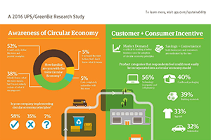
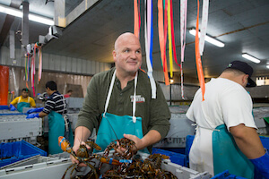

The Growth of the Circular Economy
Research from a UPS/GreenBiz survey on the principles, obstacles and opportunities in a circular...
More >>

Why Customer Service Begins with Empathy
Mark Murrell explains how he grew GetMaineLobster.com with an intense focus on customer... More >>
How It Works: UPS Carbon Neutral
A look at how UPS helps customers offset the carbon impact of... More >>

Renewable Fuel: A Sustainable Solution
How renewable natural gas is creating cleaner... More >>
Skyrocketing Aerospace Growth and Complex Supply Chains
Planemakers are rapidly increasing production, placing new demands on aerospace exporters to manage... More >>
The Wall Street Journal news organization was not involved in the creation of this content.